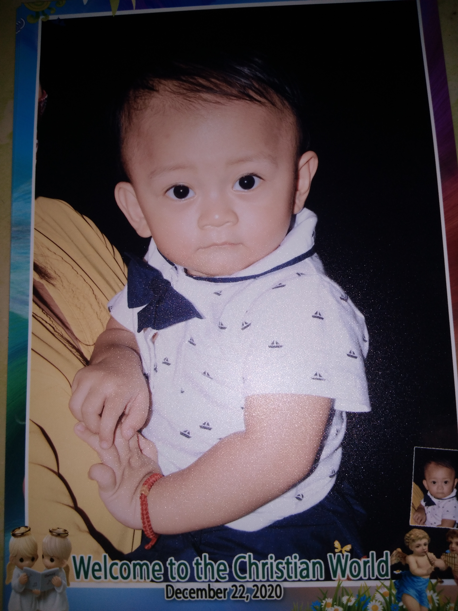

Ito naman ang araw ng binyag mo anak. Itinaon namin sa kaarawan ko para sabay na ipagdiwang.


Isang taon ka na dito anak. Malusog kang bata at malikot din. Pero nakakaramdam ako ng tumitinding sakit at panghihina ng mga paa ko.
Inutusan ako ng mama mo na bumili sa tindahan, habang naglalakad natumba ako sa daan. Itinakbo ako sa Talon Hospital. Nakauwi naman ako agad pagkacheck-up sa akin ng doctor. Pagkatapos ng ilang linggo na-diagnose ako na may hypokalemia.

Anak, ito naman yung unang beses kong binitawan ang kamay mo para maglakad kang mag-isa. Bago ka natututong gumapang, natututo kang maglakad.